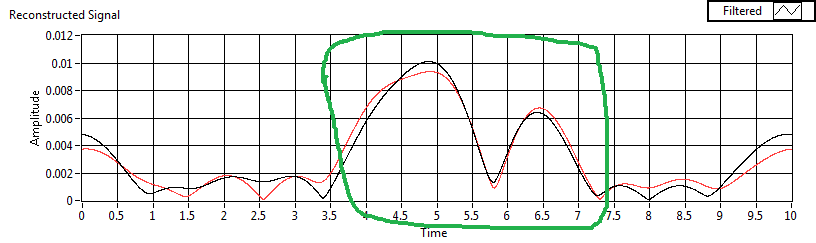
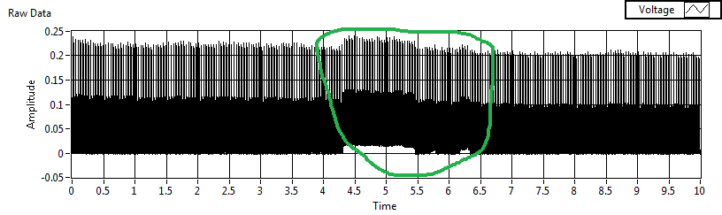
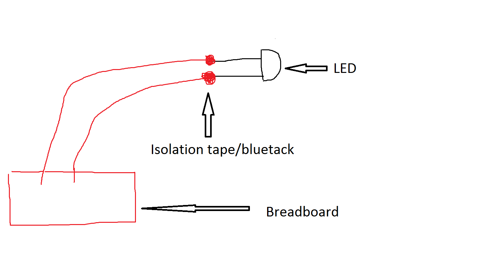
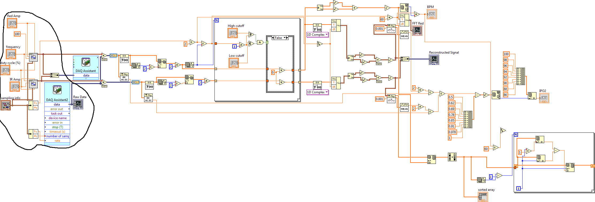
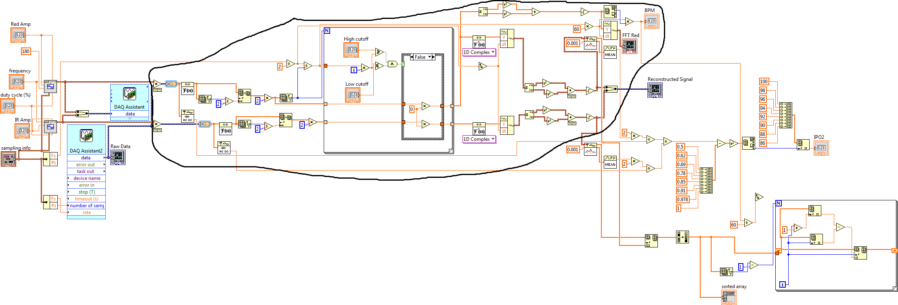
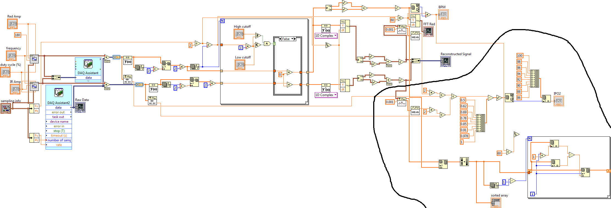
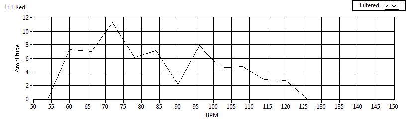
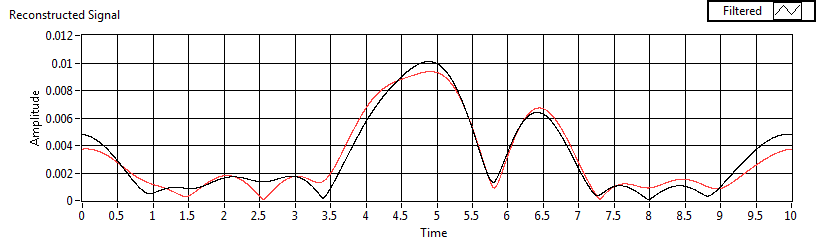

| Introduction | Physical Setup | Code | My Results |
Recently I've been experimenting with a myDAQ system using LABVIEW. Using both of these instruments allows for a very simple DIY setup. Whilst the visual programming style is often a hassle for a programmer (like myself) it's more intuitive for people with 0 coding experience and allows for an easy controls setup for fine tuning the circuit at hand. It's a system that is very much plug and go since one does not have to worry about drivers or compatibility so it's perfect if you come up with an experiment in the morning and want to do it in the afternoon.
In this web page, I'll take you through what I've learned while trying to make my DIY pulse oximeter. I'll make everything as brief as possible from now since no one wants to spend reading more than an hour just to get some quick points.
P.S. This will not cover blood oxygenation models, only the technical quirks of building DIY oximeter using myDAQ and LabView.
Here's what I've used:
And here are few things to keep in mind:



Here I'll take you through the code I've used, what does it do and what should be improved.

You will be varying frequency of the pulses and their on/off time. The shorter and more frequent the pulses the better. The limiting factors are how fast myDAQ and OP-AMP can alternate the LEDs and the method used for finding the peaks and differentiating them. Frequency of 30 and duty cycle of 25% worked the best for me.
The signals must be combined before sending them to a myDAQ driver. There can only be 1 myDAQ assistant per myDAQ. Thus making two myDAQ assistants (one for each channel) will result in an error.
Because I use the same sampling info for the driver and photodiode the number of samples and peak locations match. This allows for easy Red/Infrared separation later.
I've multiplied the generated waveforms by the detector data. This is an easy way of separating the data into Red and Infrared peaks. When the LED is not on it gets multiplied by the 0s in generated signal.

Firstly one has to choose what kind of filter to use. It might be tempting to use Express Filter VI, however here are a few problems with it. Firstly, it messes up the amplitude. In theory, Butterworth filter should be simply an FFT Bandpass with a gradual falloff rather than an instant one. However, I've found that in LabView my configurations for that filter produced a "ramp up" in a RECONSTRUCTED signal. This is probably a consequence of an optimised algorithm and not a big deal in long data series, however, in my case this was one of the reasons I chose to write my own filter. If you got more ideas, try making a square signal (like the one sent to detectors) add saw waveform and some noise and try to use different filters to see which consistently produces the initial saw amplitude.
Due to the same reasons as the point above, try to allow more of the higher frequencies in a bandpass filter. This will ensure that the amplitude of a reconstructed signal will not lose its amplitude due to filtering.
In LabView, FFT filter does not get rid of the mirroring effect. Thus simply cut out the last half of the FFT result and multiply the first one by 2.
FFT also does not have a defined X axis. Thus the delta in frequency is sampling_frequency/(2*num_samples)*i where i goes from 0 to num_samples. From this definition one cab also see that the bigger the number of samples or the lower the sampling frequency the better resolution of the FFT. I've used 10k samples at a 1k sampling frequency. Thus the FFT resolution in my case is 0.05Hz.
You also see that I take the magnitude of the iFFT results before graphing. Waveform does not do that automatically, thus without doing it, one would probably get multiple graphs.
As some might notice, the data that goes into the FFT is comprised of periodic square spikes, rather than a continuous graph. This is not a big problem as the frequencies that make up the spikes are primarily much higher than the ~1-2Hz range that we're looking for.

The models used for transforming the red/infrared ratios to oxygenation are quite complex. Thus I've used a simple data lookup table. NOTE: To improve the results interpolation should be used rather than the rounding of the values.
You can see that the value of 0.001 is used for peak threshold. This should be calibrated for each setup separately since it depends on the intensity measured from the photodiode.
The way I calculate the DC component is to multiply the peak values by 2. This is not a proper way of doing it. One should subtract the average peak value from average valley value.
Finally, there's a beginning of a peak matching system. The red and infrared peaks must match according to the model. This is a way to detect the fake peaks. Because quite a few peaks are taken in the 10s sampling period we can allow for few of them to be discarded and to still detect the oxygenation. Thus if the red and infrared peak locations are not withing a certain threshold they should not be used when taking oxygenation measurement.
One thing that a commercial oximeter should do is to detect when there is no pulse coming in. Thus the FFT amplitude of the correct range should be within a threshold, or else it should print an error.
A commercial oximeter should also be quick to update. The oximeter in this example might take 10 heartbeats to update, whereas during a surgery every second matter. It should be taking samples until a heartbeat is detected, then send it to SpO2 processing. This way the data will occupy a consistent window of a heartbeat to heartbeat.
Knowing this you won't have to be lucky to get meaningful results. Tip: The telltale sign that your Oximeter works is the consistent matching of the peaks in the cleaned up signal. As you can see mine works sometimes. The following data results in blood oxygenation of 100% and BPM of 72.

